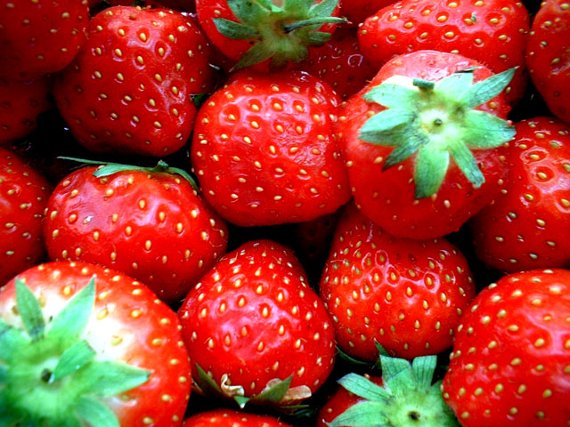
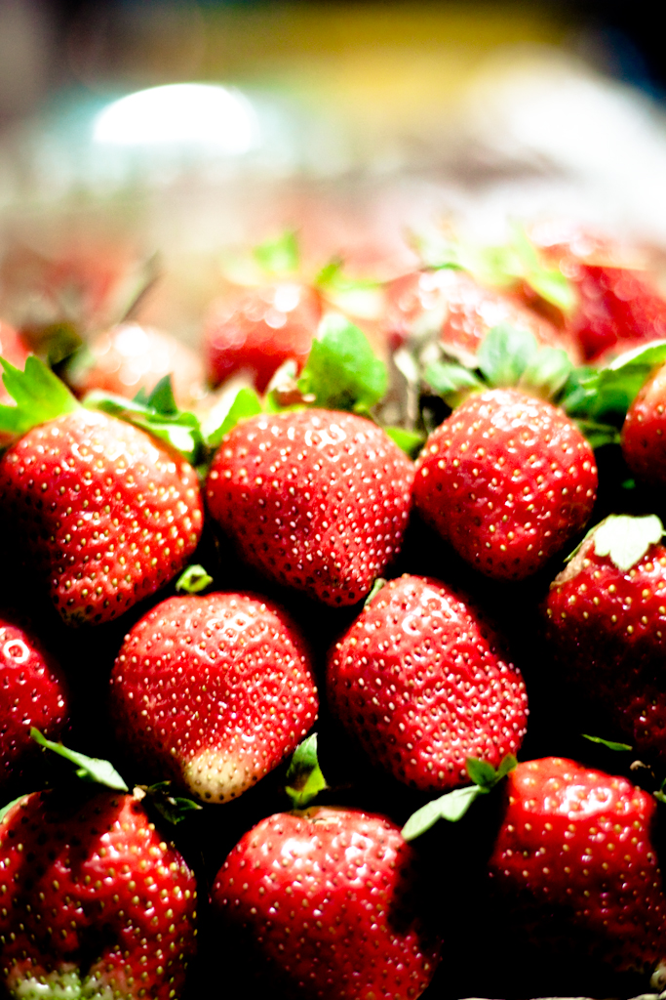
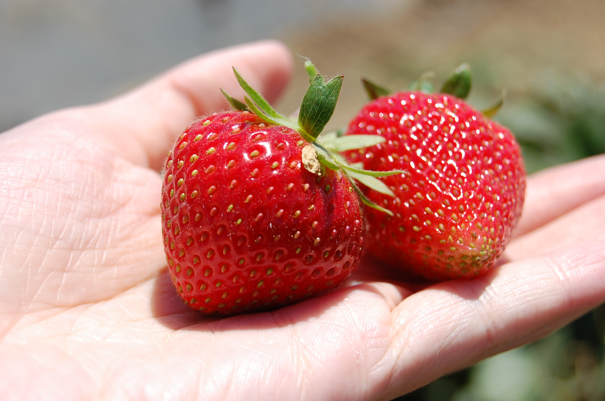

Erdbeeren - lecker und vitaminreich!
Aufgrund ihres aromatischen Duftes und der appetitlichen Farbe aber auch wegen ihres Vitaminreichtums gehören Erdbeeren zum Lieblingsobst vieler Menschen. Mit einem hohen Vitamin C- und Mineralstoffgehalt ist die Erdbeere ein wichtiger Nährstofflieferant.
Bei nur etwa 35 Kalorien pro 100 Gramm gelten die kleinen roten Früchte außerdem als idealer Sommer-Snack für die schlanke Linie.
Auch enthalten Erdbeeren laut der Ernährungsberatung sekundäre Pflanzenstoffe aus der Gruppe der Polyphenole, zu denen Flavonoide und Phenolsäuren gehören.
Polyphenole können vor Herz-Kreislauf-Erkrankungen schützen, Krankheitskeime abtöten und wirken entzündungshemmend.
Unsere Sorten!
Clery
Die Clery ist eine sehr früh blühende Erdbeersorte, die sich besonders durch gute Festigkeit und Haltbarkeit auszeichnet. Der Geschmack ist sehr ausgewogen, besonders gut eignet sich diese Erdbeere für den Frischverzehr und zur Verarbeitung in Kuchen und Torten.
Honeoye
Eine Frühsorte. Die Früchte sind gleichmäßig groß, mittel bis dunkelrot. Sie verfügt über eine druchgefärbte, sehr aromatische Frucht. Sie hat einen hohen Ertrag, einen gesunden Wuchs und hohen Pektingehalt (d.h. sie geliert gut). Sehr gute Frucht für Marmelade und Torten.
Korona
Eine mittelfrühe Sorte mit schönem aufrechten Wuchs und hohen Blättern. Die Frucht ist grpß, hell- bis mittelrot, süß und hat ein sehr gutes Aroma. Diese Erdbeere bieten wir auf unseren Selbstpflückfeldern in Koppelheck und Ausacker an.
Sonata
Eine mittelspäte Sorte, die sich durch sehr schöne und gleichmäßige große, glänzende Früchte auszeichnet. Sie hat einen sehr guten Fruchtansatz und ist auch leicht zu ernten. Die Beeren sind saftig und süß.
Florence
Die Florence ist eine späte Erdbeersorte, die besonders für ihre Robustheit bekannt ist. Die Frucht ist aromatisch und lässt sich gut verarbeiten oder einfrieren.
Malwina
Malwina ist europaweit die derzeit späteste Erdbeersorte. Die Frucht ist glänzend dunkelrot und verfügt über ein hervorragendes Aroma. Für Frischverzehr und Weiterverabeitung eignet diese Frucht sich besonders gut.
Warum sind Erdbeeren so gesund?
100 Gramm Erdbeeren haben nur 37 kcal (155 kJ). Das ist noch weniger, als die meisten heimischen Obstsorten haben. Erdbeeren haben einen hohen Gehalt an Ballaststoffen (vor allem Pektine und Zellulose), Vitaminen, Fruchtsäuren, Fruchtzuckern und Mineralien. Im Vergleich zu Kern- und Steinobstarten haben Früchte wie die Erdbeere einen höheren Gehalt an Fruchtsäuren, Mineralstoffen und Vitamin C.
100 Gramm Erdbeeren enthalten (in Klammern zum Vergleich die Süßkirsche):
- Eiweiß: 1,1 Gramm (0,75 Gramm)
- Fruchtsäuren: 0,85 Gramm (0,64 Gramm)
- Kohlenhydrate: 7,5 Gramm (15,6 Gramm)
- Karotin: 0,04 Gramm (0,02 Gramm)
- Vitamin B1: 0,03 Milligramm (0,04 Milligramm)
- Vitamin B2: 0,06 Milligramm (0,04 Milligramm)
- Vitamin C: 56-94 Milligramm (8-15 Milligramm)
- Kalium 142 Milligramm (227 Gramm)
- Magnesium 14,0 Gramm (0,8 Gramm)
- Calcium 26,0 Gramm (16,0 Gramm)
Aus botanischer Sicht keine Beere?
Die Erdbeeren (botanisch: Fragaria) sind botanisch gesehen keine Beeren, ebenso wenig wie Himbeeren und Brombeeren, sondern Sammelnussfrüchte. Das leckere rote Fruchtfleisch ist nur eine Scheinfrucht, während die eigentlichen Früchte der Erdbeere die kleinen gelben Körner an der Oberfläche sind. Diese Körnchen sind die eigentlichen Einzelfrüchte der Erdbeere (Nüsschen). Die Erdbeeren gehören zur Familie der Rosengewächse (botanisch: Rosaceae). Einige Gattungen der Rosengewächse bilden Sammelnussfrüchte aus, neben den Erdbeeren sind dies z.B. auch die Hagebutten bei den Rosen.